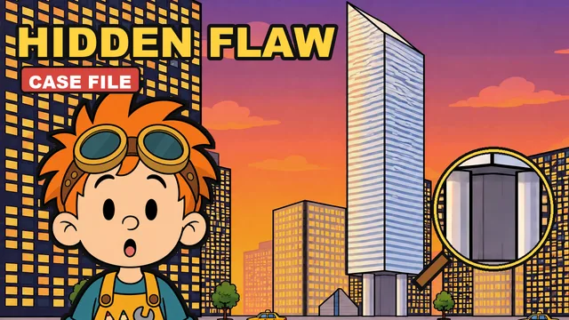
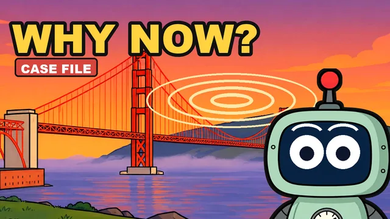
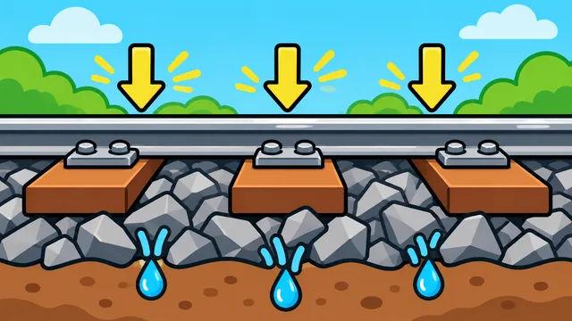
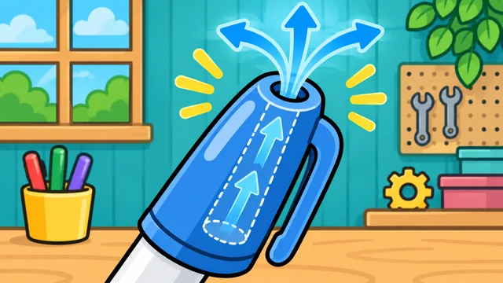
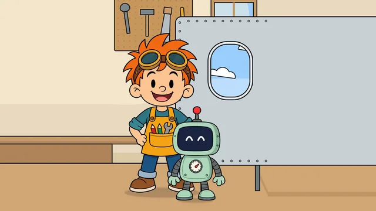

Why do brick walls have little holes at the bottom?
Those little gaps at the bottom of brick walls look like a mistake. Gauge wants to seal them. Should he?
The obvious fix, and why engineers didn't use it.
The newest case: the obvious fix, and the real reason it doesn't work.
Those little gaps at the bottom of brick walls look like a mistake. Gauge wants to seal them. Should he?
One big mystery, solved clue by clue. New Case Files every Sunday at 10 AM ET.

A 59-story tower on stilts, a hidden weakness, and welders working through the night. Gauge has red string. Lots of it.

In 2020, people across San Francisco heard the bridge hum. The answer runs through a bridge experts said couldn't be built, its orange paint, and a bridge built to move.
Pick a topic, follow your curiosity, and see how the world works!
A 59-story tower on stilts, a hidden weakness, and welders working through the night. Gauge has red string. Lots of it.
Those ka-thunk gaps are annoying, so Gauge wants to fill them in. What are they for?

ShortsPiles of rocks look messy. Gauge wants to lay the tracks on plain dirt. Will dirt hold?

ShortsGauge wants to seal that “pointless” hole for fresher ink. Fitz says not so fast.
 Shorts
ShortsFitz wants a round stop sign. Gauge wants to know: is round already taken?
 Shorts
ShortsLook closely at an airplane window and you'll find a tiny hole. Fitz wants to plug it. Should he?
 Shorts
ShortsWoodpeckers bang their heads into trees thousands of times a day. How is their brain okay?

ShortsSquare windows would show more sky. So why does every airplane have round ones?
Fitz and Gauge are cartoons, but the answers aren't made up.
Every episode starts from something you can actually see in the world, and answers just that.
Government agencies, universities, manufacturers and peer-reviewed research. The gags can be silly; the facts can't.
Every episode lists its sources, each with the claim it supports. Start with the latest mystery's sources.
Fitz is a young inventor who has taken apart enough of the world to know why it's built the way it is. When Gauge pitches the obvious fix, Fitz is the one who stops him and explains what the engineers knew.
Gauge is the robot Fitz built, and he's curious about everything. He's always first with the obvious fix (seal it, sand it, paint it plain) and first to ask why it won't work. When the real answer turns up, he's the most excited one in the room.
What should Fitz & Gauge investigate next?
The question mailbox isn't open yet. Until it is, comment your question on our latest Short. We read every one.
Comment on the latest Short